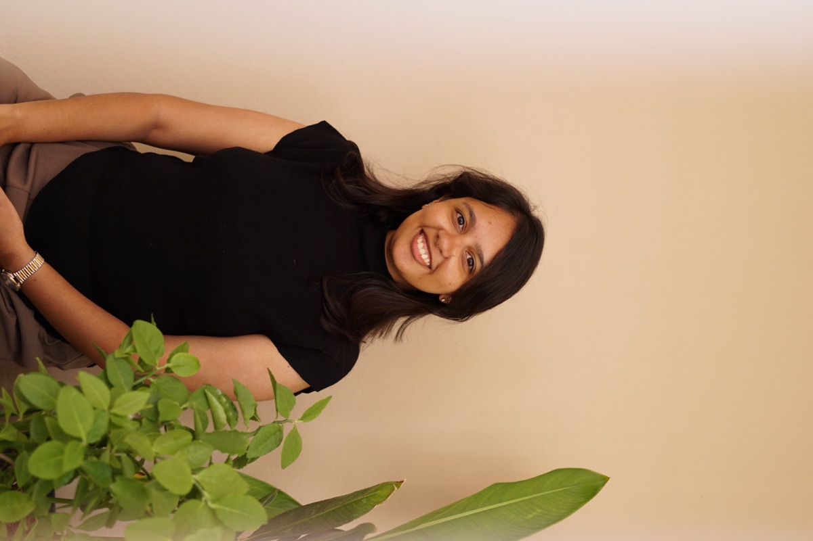

Body
Somatic practices and Bach flower support to release emotions and shift how you feel about yourself.
Learn moreInflow Living
For people ready to feel more grounded, clear, and creatively alive.
Join a gathering60+
hours of 1:1 sessions across modalities
2+
years guiding people
11k+
Spotify streams on Your Voice
6+
gatherings since May 2026
Somatic practices and Bach flower support to release emotions and shift how you feel about yourself.
Learn moreMindset work and transformational coaching to move from stuck patterns to clear decisions.
Learn moreCreative practice, journaling, art, and writing for intentional living and a more alive everyday.
Learn moreMeet your facilitator

Emotional Wellness Facilitator
I believe healing isn't about becoming someone new, but finding your way back to yourself. Over the past two years, my work with people has taught me to listen beyond the words, pay attention to the nuances of their emotions, and gently guide sessions towards a deeper understanding of what they're experiencing. Through Bach Flower Therapy, I bring this attentiveness into understanding each person's emotional needs and selecting remedies that are personalised to them. My intention is to create a space where you feel heard, understood, and supported in your journey towards a more authentic life.
More about Inflow LivingNo new dates are listed just yet. Check Instagram for the latest gathering updates.
Kind words
“I finally feel like I can slow down without losing momentum.”
Amelia R. / Member reflection
“The sessions felt grounding, practical, and beautifully paced.”
Lena S. / Community review
“This community gave me a calmer rhythm and more creative confidence.”
Member note
“I feel more at ease in my own life, and my creative work has opened up again.”
Sofia M. / 1:1 session